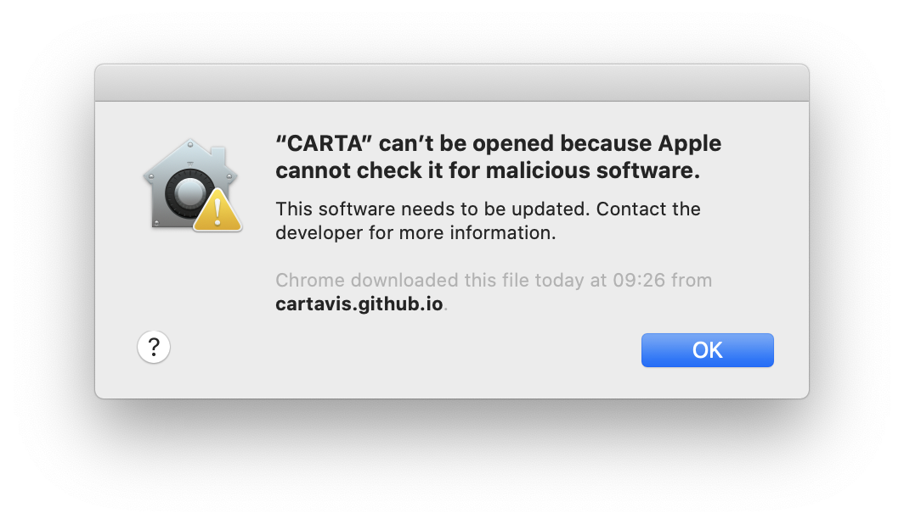
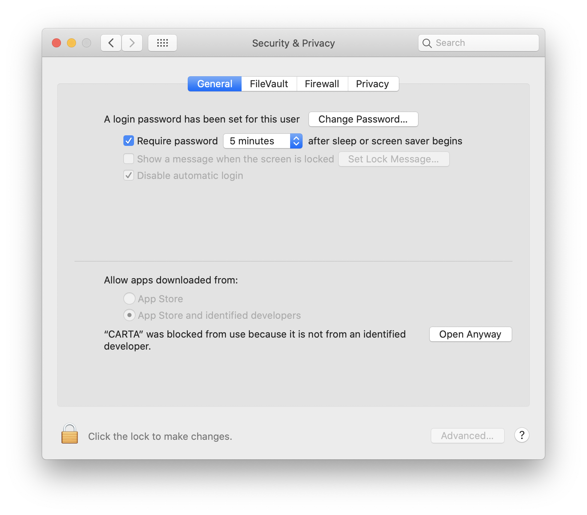

Installation and configuration¶
CARTA v1.3 supports the following operating systems:
macOS 10.14/10.15
Ubuntu 16.04 LTS/18.04 LTS
RedHat 7
RedHat 6 (conditional)
Command line to launch CARTA is supported (see Command line startup for instructions).
CARTA utilizes discrete or integrated GPU for image rendering. For users who wish to run CARTA from a remote RedHat 6/7 or Ubuntu 16.04 LTS/18.04 LTS server via the ssh protocol, CARTA v1.3 also provides a “remote” mode for this use case (see Command line startup for instructions). As the majority of servers do not have onboard GPUs, the remote mode runs the CARTA “backend” on the server, while the CARTA “frontend” is accessed through your web browser of choice running on your local machine. This allows your local machine’s GPU to perform the image rendering, while the remote server handles the storage and CPU/RAM intensive tasks.
If there is any problem, please contact CARTA Helpdesk for help.
CARTA-server¶
The installation and configuration of the server version is available through CARTA Helpdesk. The CARTA team would be happy to work with you on getting CARTA-server installed on your server.
CARTA-desktop: macOS 10.14/10.15¶
Please follow the steps:
Open the DMG file and drag the CARTA icon to your /Applications folder.
To run CARTA either:
Find the CARTA icon in the Launchpad and click it, or double click it in the Finder.
(Highly recommended) Create an alias in your ~/.bashrc file by opening your ~/.bashrc file in a text editor and add the following line:
alias carta='/Applications/CARTA.app/Contents/MacOS/CARTA'Then, after entering source ~/.bashrc in the terminal, you will be able to start CARTA by simply typing “carta”.
source ~/.bashrc carta
Note
If you see a prompt with “CARTA can’t be opended because Apple cannot check it for malicious software.”, please go to System preferences -> Security & Privacy and hit the Open anyway button to launch CARTA.
CARTA-desktop: Ubuntu 16.04 LTS/18.04 LTS¶
Please follow the steps:
Unzip the tgz file
tar -xvf CARTA-v1.3-ubuntu.tgz
To run CARTA either
Execute the AppImage directly
./CARTA.AppImage
(Highly recommended) Create an alias in your shell script file. For example, if you are using bash and the AppImage happens to be in your Downloads folder, open ~/.bashrc file in a text editor and add a line
alias carta='~/Downloads/CARTA.AppImage'
Then, after entering source ~/.bashrc in the terminal, you will be able to start carta by simply typing “carta”.
source ~/.bashrc cartaIf you use csh or tcsh, the syntax differs only in that there is no equals sign, therefore it would be
alias carta '~/Downloads/CARTA.AppImage'
and
source ~/.cshrc cartaor
source ~/.tcshrc carta
Note
For this v1.3 release we are providing a combined desktop and remote server capability.
Invoke remote mode with the “--remote” flag
./CARTA.AppImage --remote
or, if an alias is created,
carta --remote
CARTA-desktop: Redhat 7¶
Please follow the steps:
Unzip the tgz file
tar -xvf CARTA-v1.3-RedHat7.tgz
To run CARTA either
Execute the AppImage directly
./CARTA.AppImage
(Highly recommended) Set up an alias in your shell script file. For example, if your are using bash and the AppImage happens to be in your Downloads folder, open your ~/.bashrc file in a text editor and add a line
alias carta='~/Downloads/CARTA.AppImage'Then, after entering source ~/.bashrc in the terminal, you will be able to start carta by simply typing “carta”.
source ~/.bashrc cartaIf you use csh or tcsh, the syntax differs only in that there is no equals sign, therefore it would be
alias carta '~/Downloads/CARTA.AppImage'and
source ~/.cshrc cartaor
source ~/.tcshrc carta
Note
On RedHat7 machines, an updated ‘nss’ package may need to be installed.
sudo yum install nss
Note
On RedHat7 machines after starting the AppImage, you may see a warning about ‘Fontconfig’. It does not affect usage of CARTA, but the warning can be removed by installing the fontconfig package.
sudo yum install fontconfig
Note
For this v1.3 release we are providing a combined desktop and remote server capability.
Invoke remote mode with the “--remote” flag e.g.
./CARTA.AppImage --remote
or
carta --remote
If using remote mode on RedHat7 with Firefox browser, the Firefox version needs to be newer than ESR 52.7.2 and have “wasm” streaming enabled (See Troubleshooting for more information).
CARTA-desktop: Redhat 6¶
Neither AppImage nor Electron runs on RedHat 6, therefore we supply a “standalone” remote server package. It is intended for RedHat 6 use only, however it can also run on both RedHat 7 and Ubuntu 16.04 LTS/18.04 LTS.
Please follow the steps:
Extract the archive
tar -xvf CARTA-v1.3-remote.tgz
Execute the carta script within the “CARTA-v1.3-remote” folder
./carta
Follow the onscreen instructions to copy and paste the unique URL into your web browser.
Usage instructions are slightly different from the Desktop versions so please check the help command with “./carta --help”. For example, you can not open images directly (can not “./carta image.fits”)
You could make an alias in your ~/.bashrc file similar to this
alias carta='~/CARTA-v1.3-remote/carta'
If you use csh or tcsh, the syntax differs only in that there is no equals sign, therefore it would be
alias carta '~/Downloads/CARTA-v1.3-remote/carta'
and
source ~/.cshrc cartaor
source ~/.tcshrc carta
Command line startup¶
CARTA can be started through the command line. To enable this feature, an alias of the CARTA executable needs to be created first.
Once it is set, simply typing “carta” then hitting the “return” key will launch CARTA.
carta # file browser will show images in the current working directory ($PWD)
The CARTA executable alias accepts keyword arguments or flags to configure how the CARTA backend is initialized. Common use cases are summarized below.
open an image via the command line
carta M51.fits # to open an image in FITS format carta M51.image # to open an image in CASA format carta M51.hdf5 # to open an image in HDF5-IDIA format carta M51.im # to open an image in MIRIAD format
launch CARTA and have the file browser to show images at a custom directory
carta /my/image/directory
If CARTA is installed on a remote server, and users access the server via the ssh protocol, CARTA backend can be initialized via the following options.
initialize a remote CARTA backend service with both frontend and backend ports selected automatically:
carta --remote # CARTA URL will be shown in the prompt. # Copy-and-paste the URL to your local browser (Chrome, Firefox, or Safari) =========== what you may see after hitting return key =========== Starting CARTA in remote mode To access CARTA, please enter either of the following URLs in your local web browser: www.carta.edu:2000/?socketUrl=ws://www.carta.edu:3000 OR 192.168.1.312:2000/?socketUrl=ws://192.168.1.312:3000 Press ctrl+c to exit
Tip
When using remote mode, an image may be opened directly using a modified URL. For example, if we wanted to open a remote image file “/home/acdc/CARTA/Images/jet.fits”, we would append
&folder=/home/acdc/CARTA/Images&file=jet.fits
to the end of the URL (e.g., http://www.carta.edu:2000/?socketUrl=ws://www.carta.edu:3000). In this example our full URL is
http://www.carta.edu:2000/?socketUrl=ws://www.carta.edu:3000&folder=/home/acdc/CARTA/Images&file=jet.fits
Please note that it is necessary to give full path. Tilde (~) is not allowed.
initialize a remote CARTA backend service with customized frontend (e.g., 5678) and backend (e.g., 1234) ports:
carta --remote --port=1234 --fport=5678 =========== what you may see after hitting return key =========== Starting CARTA in remote mode To access CARTA, please enter either of the following URLs in your local web browser: www.carta.edu:5678/?socketUrl=ws://www.carta.edu:1234 OR 192.168.1.312:5678/?socketUrl=ws://192.168.1.312:1234 Press ctrl+c to exit
For CARTA-server administration, the following advanced keyword arguments may be adopted.
to set a limit of the file list scope:
carta --remote --root=/lustre/users/bob # user cannot navigate up to /lustre/users # --root defaults to "/"
to set a number of threads for the CARTA backend service:
carta --remote --threads=24 # set 24 threads for the CARTA backend service # --threads defaults to number of cores on your system
An online user manual regarding all the above mentioned keyword arguments is also available.
carta --help # show all available keyword arguments with explanations.
usage: carta [] CARTA file browser will default to the current path.
[<path>] CARTA file browser will default to the specified
path <path> e.g. carta ~/CARTA/Images
[<image>] CARTA will directly open the image named <image>
e.g. carta aJ.fits or carta ~/CARTA/Images/aJ.fits
[--folder=<path>] Optional: An alternative way to define the
default CARTA file browser path.
Note: Not for directly opening an image.
[--help] View this help output
Remote mode flags
[--remote] start CARTA in 'remote' mode. For accessing CARTA's
frontend through your webrowser rather than the standard
Electron interface. A free websocket port and a frontend
port will be chosen automatically.
[--port=<number>] Optional: Manually choose a websocket port for the
backend. CARTA will check if the port is available
and issue a warning if not. A typical value is
between 1025-65535.
[--fport=<number>] Optional: Manually choose a frontend port for the
CARTA web interface. CARTA will check if the port
is available and issue a warning if not. A typical
value is between 1025-65535.
Advanced usage flags
[--root=<path>] Define the lowest path the file browser can
navigate to. e.g. carta --root /home/bob means the
the file browser can not access anything in /home
Note: --root can not be set inside --folder.
[--threads=<number>] Set the number of threads. It controls how many
tasks CARTA handles simultaneosuly. The default
value is set as 4
[--omp_threads=<number>] Set the number of OpenMP threads. It controls
how trivially parallelisable tasks are split
by CARTA. The default value is the
automatically detected number of cores on
your system; usually 4 or 8 on a typcial
desktop or laptop.
Troubleshooting¶
In this section, we provide common issues we have experienced so far and provide solutions. If none of the solutions work, please do contact CARTA Helpdesk for help.
I see a blank image…
If you are using vnc:
Tip
The following is a tip for VNC users.
If your VNC connection passes through an intermediate or ‘gate’ machine, e.g.
<local machine> - <gate machine> - <remote machine>,
you may need to do an additional port mapping step.
Assuming you have successfully connected to <remote machine> and have started the CARTA remote server there, you will see the CARTA URL with two unique port numbers e.g.
<remote machine>:<1st port number>/?socketUrl=ws://<remote machine>:<2nd port number>On your local machine, open a new terminal and enter the following command:
ssh -L 1234:<remote machine>:<1st port number> -L 5678:<remote machine>:<2nd port number> <username>@<gate machine>
You can now enter
<remote machine>:1234/?socketUrl=ws://<remote machine>:5678in your local machine’s web browser to connect to CARTA remote server running on the remote machine (1234 and 5678 are given as an example. You may choose different port numbers if you wish).
<remote machine> can either be the machine’s hostname or IP address.
Tip
If you are running the RedHat7 AppImage version on a VNC server but loaded images appear blank, please use the following prefix when starting the AppImage:
LIBGL_ALWAYS_INDIRECT=1 ./CARTA.AppImage
Loaded images should now render correctly.
After copy-and-paste a CARTA URL, I see the CARTA GUI is not initialized…
Check your browser version. It needs to support “wasm” streaming and be enabled. More information about browser support of WebAssembly can be found at https://caniuse.com/#search=WebAssembly
CARTA utilises WebAssembly and that was introduced in version 52 of Firefox. Some RedHat6 and RedHat7 distributions may have versions of Firefox earlier than version 52. If that is the case, we highly recommend that you update to a more recent Firefox version with “sudo yum update firefox”.
Other RedHat7 distributions may have Firefox 52 ESR which although having WebAssembly support, it is deactivated by default. We still recommend updating to a newer version of Firefox, but if you can not, you can try activating WebAssembly as follows:
Open a new tab and enter “about:config” in the URL bar.
A warning message will appear. Click the button to continue.
In the search box enter “wasm” and the list will filter down to a few results.
Double click each line related to “javascript.options.wasm” so that the “Value” column shows them as “true”.
Then simply close the “about:config” tab and the CARTA frontend should now load properly.
As for the Chrome browser, Webassembly support was introduced in Chrome version 51, but versions 51 to 56 have it deactivated by default. To activate WebAssembly in Chrome 51 to 56 enter “chrome://flags” in the URL bar, type WebAssembly in the search box that appears, and change each WebAssembly option to “Enabled”. If you have Chrome version 57 or newer, WebAssembly should be activated by default.
CARTA does not launch…
Check if there is existing “carta_backend” process running. The port number may conflict.
The RedHat7 AppImage does not open and it prints a message suggesting to extract the AppImage using the “--appimage-extract” flag.
This error is due to lack of FUSE (File System in Userspace) support. We suspect that FUSE support in RedHat7 systems may be disabled in some institute environments for security reasons. If that is the case, we recommend using the ‘remote’ version of CARTA instead.
“backspace” does not delete a region…
If using CARTA remote mode in Firefox on MacOS, you may find the “backspace” key navigates back a page instead of removing a region. This behaviour can be prevented by modifying your Firefox web browser settings:
Enter about:config in the address bar.
Click “I accept the risk!”
A search bar appears at the top of a long list of preferences. Search for “browser.backspace_action”
It will likely have a value of 0. Double click it, and then modify it to a value of “2”.
Close the about:config tab and now backspace will no longer navigate back a page.